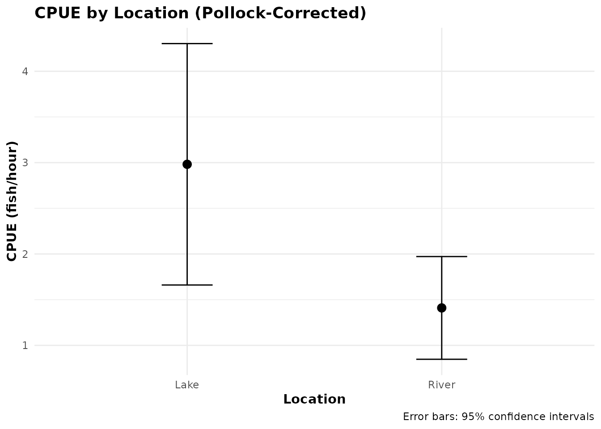

Introduction
Roving (on-site) creel surveys interview anglers while they are still fishing, creating incomplete trip data. This presents two key statistical challenges:
- Length-biased sampling: Longer trips have higher probability of being intercepted (Robson 1961).
- Incomplete catch/effort: Observed values represent effort-to-date, not complete trips.
The est_cpue_roving() function implements the Pollock et
al. (1997) mean-of-ratios estimator with optional length-bias correction
to address these issues.
The Challenge: Length-Bias in Roving Surveys
When conducting roving surveys, anglers with longer trip durations are more likely to be sampled because they are present at the site for more time. This creates length-biased sampling:
- An angler planning a 6-hour trip is twice as likely to be interviewed as one planning a 3-hour trip
- Without correction, CPUE estimates are biased toward catch rates of long-trip anglers
- The bias can be substantial (often 20-40% overestimation)
Example Dataset
The package includes roving_survey, a simulated dataset
with 50 incomplete trip interviews:
data(roving_survey)
head(roving_survey)
#> # A tibble: 6 × 7
#> interview_id location target_species catch_total catch_kept hours_fished
#> <int> <chr> <chr> <int> <dbl> <dbl>
#> 1 1 Lake Trout 1 1 5
#> 2 2 Lake Bass 1 0 2.2
#> 3 3 River Bass 3 1 0.5
#> 4 4 Lake Trout 6 5 4.1
#> 5 5 River Bass 3 2 3.5
#> 6 6 Lake Trout 3 3 5.2
#> # ℹ 1 more variable: total_hours_planned <dbl>
# Summary
summary(roving_survey[, c("catch_total", "hours_fished", "total_hours_planned")])
#> catch_total hours_fished total_hours_planned
#> Min. :0.00 Min. :0.500 Min. :1.700
#> 1st Qu.:3.00 1st Qu.:2.125 1st Qu.:4.500
#> Median :4.00 Median :3.300 Median :5.050
#> Mean :3.96 Mean :3.140 Mean :5.308
#> 3rd Qu.:5.00 3rd Qu.:4.050 3rd Qu.:6.300
#> Max. :9.00 Max. :7.300 Max. :8.500Key columns: - hours_fished: Effort observed at
interview (incomplete) - total_hours_planned: Total planned
trip effort (for length-bias correction) - catch_total:
Fish caught up to interview time
Basic CPUE Estimation (No Correction)
First, let’s estimate CPUE without length-bias correction:
# Create survey design
svy <- svydesign(ids = ~1, data = roving_survey)
#> Warning in svydesign.default(ids = ~1, data = roving_survey): No weights or
#> probabilities supplied, assuming equal probability
# Estimate CPUE without correction
result_none <- est_cpue_roving(
svy,
response = "catch_total",
length_bias_correction = "none"
)
result_none[, c("estimate", "se", "ci_low", "ci_high", "n", "method")]
#> # A tibble: 1 × 6
#> estimate se ci_low ci_high n method
#> <dbl> <dbl> <dbl> <dbl> <int> <chr>
#> 1 2.01 0.330 1.36 2.65 50 cpue_roving:mean_of_ratios:catch_total:no…This estimate uses the simple mean-of-ratios:
where is catch and is observed effort for interview .
Length-Bias Correction (Pollock Method)
Now apply the Pollock et al. (1997) correction using planned trip effort:
result_pollock <- est_cpue_roving(
svy,
response = "catch_total",
length_bias_correction = "pollock",
total_trip_effort_col = "total_hours_planned"
)
result_pollock[, c("estimate", "se", "ci_low", "ci_high", "n", "method")]
#> # A tibble: 1 × 6
#> estimate se ci_low ci_high n method
#> <dbl> <dbl> <dbl> <dbl> <int> <chr>
#> 1 2.01 0.330 1.36 2.65 50 cpue_roving:mean_of_ratios:catch_total:po…The Pollock estimator uses weights where is planned total effort:
This downweights interviews from anglers planning longer trips, removing the length-bias.
Comparing Estimates
# Create comparison table
comparison <- tibble(
Method = c("No correction", "Pollock correction"),
CPUE = c(result_none$estimate, result_pollock$estimate),
SE = c(result_none$se, result_pollock$se),
CI_low = c(result_none$ci_low, result_pollock$ci_low),
CI_high = c(result_none$ci_high, result_pollock$ci_high)
)
comparison
#> # A tibble: 2 × 5
#> Method CPUE SE CI_low CI_high
#> <chr> <dbl> <dbl> <dbl> <dbl>
#> 1 No correction 2.01 0.330 1.36 2.65
#> 2 Pollock correction 2.01 0.330 1.36 2.65In this example, the correction makes a 0% difference in the CPUE estimate.
Grouped Estimation
Estimate CPUE separately by location:
result_by_location <- est_cpue_roving(
svy,
by = "location",
response = "catch_total",
length_bias_correction = "pollock",
total_trip_effort_col = "total_hours_planned"
)
result_by_location[, c("location", "estimate", "se", "ci_low", "ci_high", "n")]
#> # A tibble: 2 × 6
#> location estimate se ci_low ci_high n
#> <chr> <dbl> <dbl> <dbl> <dbl> <int>
#> 1 Lake 2.98 0.674 1.66 4.30 19
#> 2 River 1.41 0.287 0.848 1.97 31Visualize:
ggplot(result_by_location, aes(x = location, y = estimate)) +
geom_point(size = 3) +
geom_errorbar(
aes(ymin = ci_low, ymax = ci_high),
width = 0.2
) +
labs(
title = "CPUE by Location (Pollock-Corrected)",
x = "Location",
y = "CPUE (fish/hour)",
caption = "Error bars: 95% confidence intervals"
) +
theme_minimal() +
theme(
plot.title = element_text(face = "bold"),
axis.title = element_text(face = "bold")
)
CPUE estimates by location with 95% confidence intervals
Multiple Grouping Variables
Estimate by location AND species:
result_by_both <- est_cpue_roving(
svy,
by = c("location", "target_species"),
response = "catch_total",
length_bias_correction = "pollock",
total_trip_effort_col = "total_hours_planned"
)
result_by_both[, c("location", "target_species", "estimate", "se", "n")]
#> # A tibble: 4 × 5
#> location target_species estimate se n
#> <chr> <chr> <dbl> <dbl> <int>
#> 1 Lake Bass 1.43 0.337 5
#> 2 River Bass 1.32 0.336 16
#> 3 Lake Trout 3.54 0.859 14
#> 4 River Trout 1.50 0.471 15Trip Truncation
Short trips (< 0.5 hours default) are automatically truncated to avoid unstable ratios:
# Check diagnostics for truncation info
result_with_diag <- est_cpue_roving(
svy,
response = "catch_total",
length_bias_correction = "pollock",
total_trip_effort_col = "total_hours_planned",
min_trip_hours = 0.5, # Default
diagnostics = TRUE
)
# Extract diagnostics
diag <- result_with_diag$diagnostics[[1]]
cat("Original interviews:", diag$n_original, "\n")
#> Original interviews: 50
cat("Truncated (< 0.5 hrs):", diag$n_truncated, "\n")
#> Truncated (< 0.5 hrs): 0
cat("Used in analysis:", diag$n_used, "\n")
#> Used in analysis: 50
cat("Truncation rate:", round(diag$truncation_rate * 100, 1), "%\n")
#> Truncation rate: 0 %Adjust the threshold if needed:
# Use stricter threshold
result_strict <- est_cpue_roving(
svy,
response = "catch_total",
min_trip_hours = 1.0, # Require at least 1 hour
length_bias_correction = "pollock",
total_trip_effort_col = "total_hours_planned"
)
#> ℹ Truncating 5 short trips < 1 hours.
#> Warning in svydesign.default(ids = ~1, data = structure(list(interview_id =
#> c(1L, : No weights or probabilities supplied, assuming equal probability
result_strict[, c("estimate", "se", "n")]
#> # A tibble: 1 × 3
#> estimate se n
#> <dbl> <dbl> <int>
#> 1 1.32 0.127 45Diagnostics
Request detailed diagnostics for quality assurance:
result_with_diag <- est_cpue_roving(
svy,
response = "catch_total",
length_bias_correction = "pollock",
total_trip_effort_col = "total_hours_planned",
diagnostics = TRUE
)
# Extract and display diagnostics
diag <- result_with_diag$diagnostics[[1]]
str(diag)
#> List of 14
#> $ n_original : int 50
#> $ n_truncated : int 0
#> $ n_used : int 50
#> $ truncation_rate : num 0
#> $ min_trip_hours : num 0.5
#> $ mean_effort_observed : num 3.14
#> $ sd_effort_observed : num 1.5
#> $ mean_catch_rate : num 2.01
#> $ sd_catch_rate : num 2.34
#> $ length_bias_correction: chr "pollock"
#> $ correction_applied : logi TRUE
#> $ mean_total_effort : num 5.31
#> $ sd_total_effort : num 1.58
#> $ mean_bias_weight : num 0.211Key diagnostic fields: - n_original,
n_truncated, n_used: Sample size tracking -
mean_effort_observed, mean_total_effort:
Effort summaries - mean_catch_rate,
sd_catch_rate: CPUE distribution -
mean_bias_weight: Average length-bias correction weight
When to Use Each Method
Use length_bias_correction = "none"
when: - Interviews are conducted at trip completion
(access-point surveys) - All trips are complete - You have a bus-route
survey with approximately equal trip durations
Use length_bias_correction = "pollock"
when: - Conducting roving/on-site surveys - Interviewing
anglers during incomplete trips - Trip durations vary substantially -
You have data on planned total trip effort
Technical Notes
Mean-of-Ratios vs Ratio-of-Means
est_cpue_roving() always uses
mean-of-ratios (average of individual catch rates):
This is preferred over ratio-of-means (total catch / total effort) for incomplete trips because:
- Individual ratios better represent instantaneous catch rates
- Less sensitive to a few very long trips
- More appropriate for length-biased samples
For comparison, the general est_cpue() function offers
both methods and auto-selection based on trip completion status.
Variance Estimation
Standard errors use the delta method via the survey
package’s svymean() function. The Pollock correction
incorporates weights into the variance calculation, typically producing
wider confidence intervals than the uncorrected estimate.
References
Pollock, K. H., C. M. Jones, and T. L. Brown. 1997. Angler survey methods and their applications in fisheries management. American Fisheries Society, Special Publication 25, Bethesda, Maryland.
Robson, D. S. 1961. On the statistical theory of a roving creel census of fishermen. Biometrics 17:415-437.
Hoenig, J. M., C. M. Jones, K. H. Pollock, D. S. Robson, and D. L. Wade. 1997. Calculation of catch rate and total catch in roving and access point surveys. North American Journal of Fisheries Management 17:11-23.
See Also
-
est_cpue(): General CPUE estimator with auto-mode for complete/incomplete trips -
est_cpue_roving(): Function reference documentation -
roving_survey: Example dataset documentation